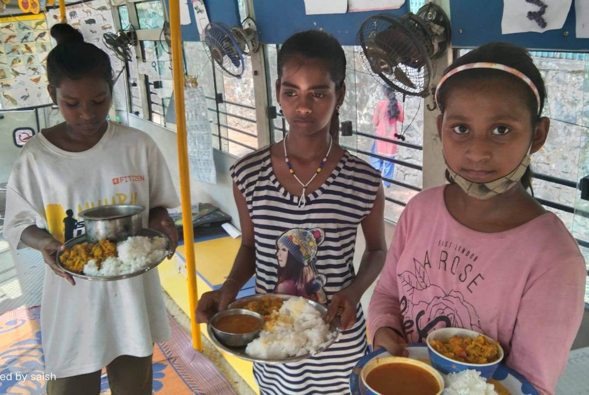

NEED FOR SCHOOL MEAL PROGRAMME
Aside from supporting education, we want to address the prevalence of alarmingly high malnutrition in underprivileged children. The Ministry of Women and Child Development estimates that as of 14 October 2021, there are 7.76 lakh severely acute malnourished children and 15.46 lakh moderately acute malnourished children in India. Reportedly, Maharashtra has the highest number of malnourished children. The state registered 6.16 lakh malnourished children with 1.57 lakh severely acute malnourished children and 4.58 lakh severely acute malnourished children. 1 Malnutrition leads to poor health, delays age-appropriate growth, hinders physical and cognitive development, weakens the immune system, and also increase the risk of mortality.
